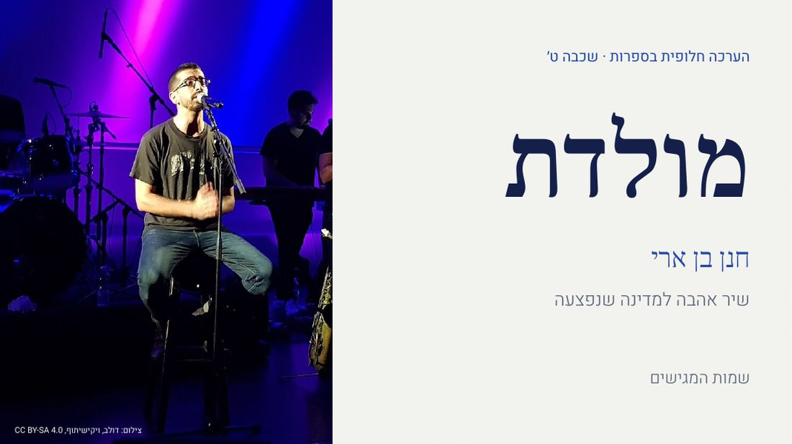
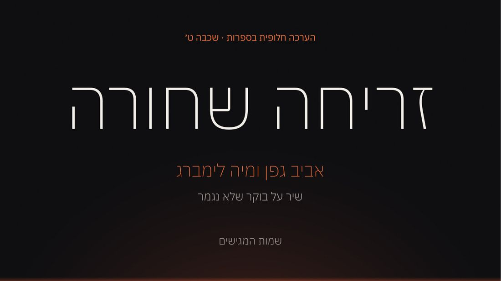
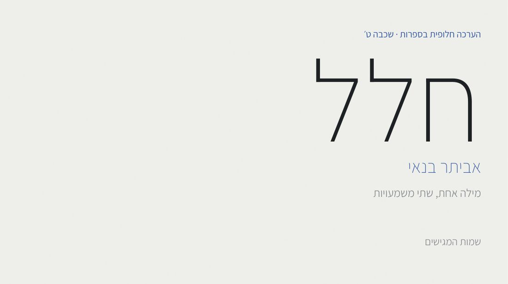
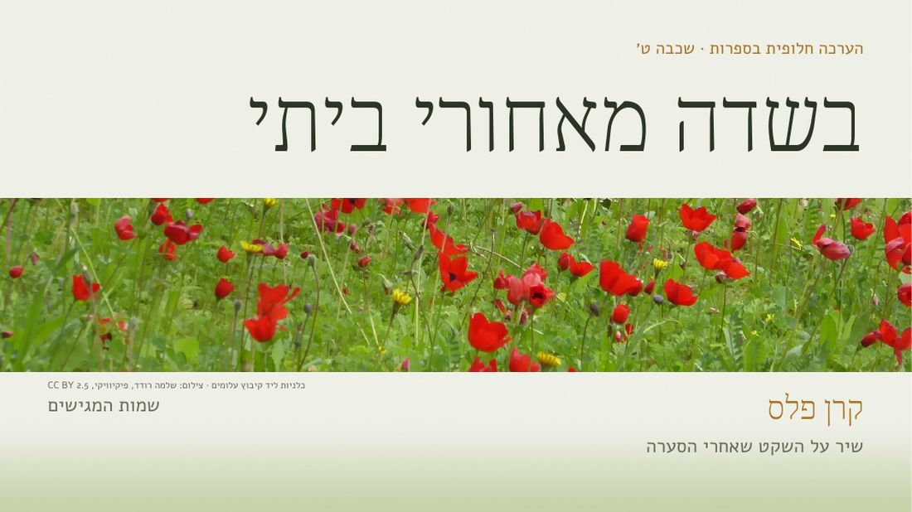
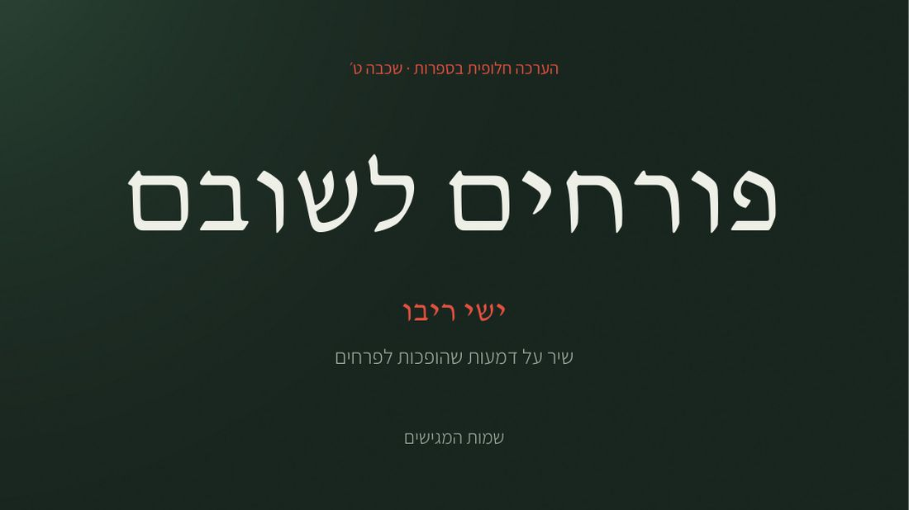
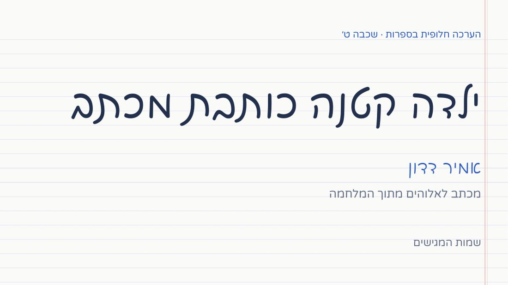
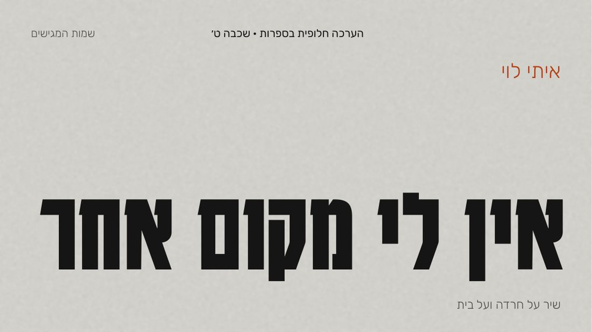
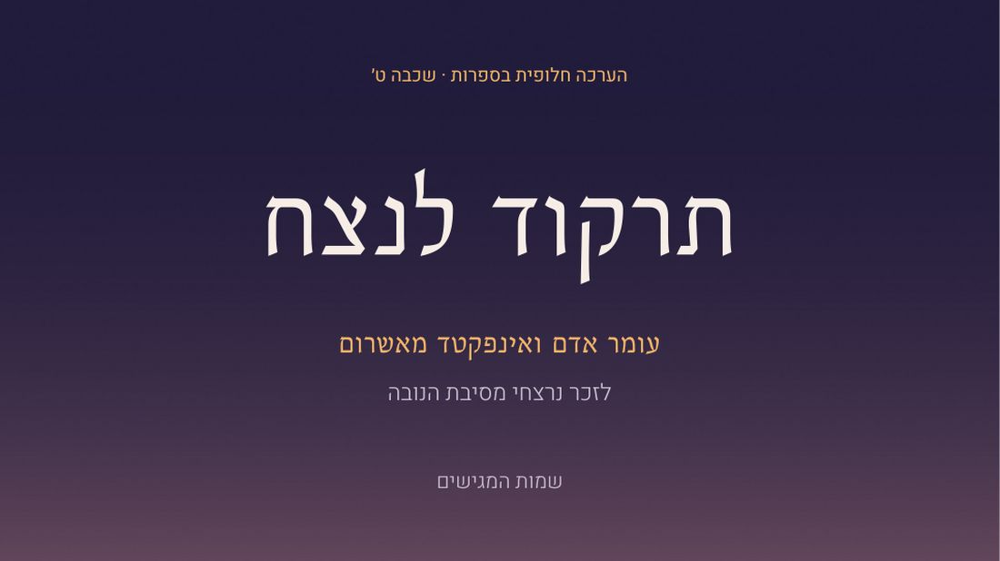
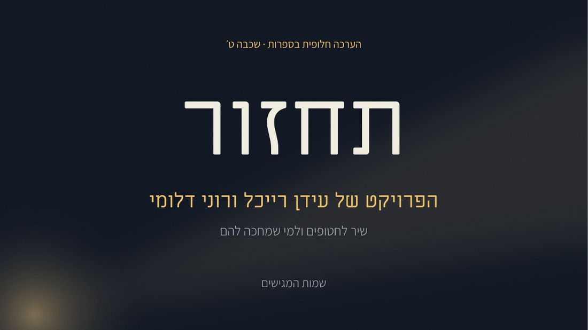
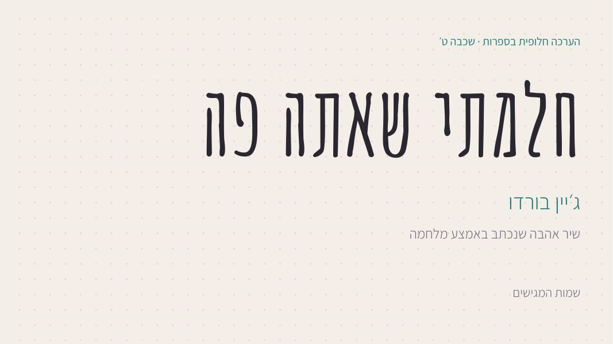

<title>בחירת פרויקט בספרות</title>
<meta name="claude:viewport-fit-sides" content="cover">
<link rel="preconnect" href="https://fonts.googleapis.com">
<link rel="preconnect" href="https://fonts.gstatic.com" crossorigin>
<link rel="stylesheet" href="https://fonts.googleapis.com/css2?family=Frank+Ruhl+Libre:wght@500;800&family=Assistant:wght@400;600;700&display=swap">
<style>
/* Layout: a dark gallery band with all ten covers, then one row per project: slide viewer beside its details */
:root{
  --bg:#F2F3F5; --surface:#FFFFFF; --ink:#14161B; --muted:#5B6170; --line:#D8DBE1;
  --accent:#1D4FBF; --on-accent:#FFFFFF; --band:#0F1218; --band-ink:#F3F4F6; --band-muted:#A6ACB8;
  --free:#1C7A4C; --taken:#B4462D;
  --display:"Frank Ruhl Libre", "David Libre", Georgia, serif;
  --body:"Assistant", "Heebo", Arial, sans-serif;
}
@media (prefers-color-scheme: dark){:root:not([data-theme="light"]){
  --bg:#101318; --surface:#181B22; --ink:#ECEEF2; --muted:#A2A8B5; --line:#2A2F39; --accent:#86A8FF; --on-accent:#0D1220;
  --band:#07090C; --free:#5CC596; --taken:#F08A70; color-scheme:dark}}
:root[data-theme="dark"]{--bg:#101318; --surface:#181B22; --ink:#ECEEF2; --muted:#A2A8B5; --line:#2A2F39; --accent:#86A8FF; --on-accent:#0D1220;
  --band:#07090C; --free:#5CC596; --taken:#F08A70; color-scheme:dark}
html{direction:rtl; scroll-behavior:smooth}
@media (prefers-reduced-motion:reduce){html{scroll-behavior:auto} *{transition:none!important}}
body{background:var(--bg); color:var(--ink); font-family:var(--body); font-size:17px; line-height:1.55}
.inner{max-width:1180px; margin:0 auto; padding-left:max(16px, env(safe-area-inset-left, 0px)); padding-right:max(16px, env(safe-area-inset-right, 0px))}
.band{background:var(--band); color:var(--band-ink)}
.band .inner{padding-block:44px 40px; display:grid; gap:22px}
.kicker{margin:0; color:var(--band-muted); font-weight:600; letter-spacing:.03em}
h1{margin:0; font-family:var(--display); font-weight:800; font-size:clamp(40px,7vw,76px); line-height:1; text-wrap:balance}
.lead{margin:0; max-width:60ch; color:var(--band-muted); font-size:18px}
.count{color:var(--band-ink); font-weight:700}
.mosaic{display:grid; grid-template-columns:repeat(5,minmax(0,1fr)); gap:10px}
.tile{position:relative; display:block; color:var(--band-ink); text-decoration:none; border-radius:4px; overflow:hidden; outline-offset:3px}
.tile img{display:block; width:100%; height:auto; aspect-ratio:16/9; object-fit:cover; transition:transform .25s ease, filter .25s ease}
.tile:hover img{transform:scale(1.04)}
.tile:focus-visible{outline:3px solid var(--band-ink)}
.tile.is-taken img{filter:grayscale(1) brightness(.55)}
.tnum{position:absolute; top:6px; right:8px; font-weight:700; font-size:13px; background:rgba(0,0,0,.55); padding:1px 7px; border-radius:3px; font-variant-numeric:tabular-nums}
.sr{position:absolute; width:1px; height:1px; overflow:hidden; clip:rect(0 0 0 0)}
.tname{position:absolute; bottom:6px; right:8px; left:8px; font-size:13px; font-weight:600; text-shadow:0 1px 6px rgba(0,0,0,.8); white-space:nowrap; overflow:hidden; text-overflow:ellipsis}
.steps{margin:0; padding:0; list-style:none; display:flex; flex-wrap:wrap; gap:8px 26px; color:var(--band-ink)}
.steps b{font-family:var(--display); font-size:22px; margin-left:6px}
main .inner{padding-block:10px 60px}
.proj{display:grid; grid-template-columns:minmax(0,1.45fr) minmax(0,1fr); gap:34px; padding-block:40px; border-bottom:1px solid var(--line); scroll-margin-top:12px}
.viewer{display:grid; gap:10px; min-width:0}
.big{display:block; width:100%; height:auto; aspect-ratio:16/9; object-fit:cover; border:1px solid var(--line); box-shadow:0 18px 40px -26px rgba(0,0,0,.55)}
.tabs{display:flex; flex-wrap:wrap; gap:6px}
.tab{font:inherit; font-size:15px; border:1px solid var(--line); background:var(--surface); color:var(--ink); padding:6px 12px; border-radius:999px; cursor:pointer}
.tab[aria-selected="true"]{background:var(--ink); color:var(--bg); border-color:var(--ink)}
.tab:focus-visible, .copy:focus-visible{outline:3px solid var(--accent); outline-offset:2px}
.meta{display:flex; flex-direction:column; gap:6px; min-width:0}
.top{display:flex; align-items:center; gap:12px}
.code{font-family:var(--display); font-weight:800; font-size:34px; line-height:1; color:var(--accent); font-variant-numeric:tabular-nums}
.chip{font-size:13px; font-weight:700; padding:3px 10px; border-radius:999px; border:1.5px solid currentColor}
.chip.free{color:var(--free)}
.chip.taken{color:var(--taken)}
h2{margin:4px 0 0; font-family:var(--display); font-weight:800; font-size:clamp(30px,4vw,44px); line-height:1.05; text-wrap:balance}
.artist{margin:0; font-weight:700; color:var(--muted)}
.about{margin:6px 0 0}
blockquote{margin:10px 0 4px; padding:0 14px 0 0; border-right:3px solid var(--line); font-family:var(--display); font-size:19px; line-height:1.45}
dl{margin:8px 0 0; display:grid; gap:6px}
dl div{display:grid; grid-template-columns:76px minmax(0,1fr); gap:10px}
dt{color:var(--muted); font-size:14px; padding-top:2px}
dd{margin:0}
.pick{margin-top:16px; display:flex; flex-wrap:wrap; align-items:center; gap:12px}
.copy{font:inherit; font-weight:700; border:0; border-radius:6px; padding:11px 18px; background:var(--accent); color:var(--on-accent); cursor:pointer}
.copy:hover{filter:brightness(1.08)}
.note{font-size:14px; color:var(--muted)}
.takenmsg{margin:0; color:var(--taken); font-weight:600}
.proj.is-taken .big{filter:grayscale(.6)}
footer{padding-top:26px; color:var(--muted); font-size:14px; max-width:70ch}
@media (max-width:900px){.mosaic{grid-template-columns:repeat(2,minmax(0,1fr))} .proj{grid-template-columns:minmax(0,1fr); gap:18px}}
</style>
<section class="band">
  <div class="inner">
    <p class="kicker">הערכה חלופית בספרות · שכבה ט׳</p>
    <h1>בוחרים פרויקט</h1>
    <p class="lead">עשרה פרויקטים מוכנים. כל אחד עוסק בשיר אחר מתקופת המלחמה, ובנוי בעיצוב אחר לגמרי. <span class="count">10 מתוך 10 פנויים.</span></p>
    <nav class="mosaic" aria-label="כל הפרויקטים"><a class="tile" href="#p01"><span class="tnum">01</span><span class="sr">מולדת</span></a><a class="tile" href="#p02"><span class="tnum">02</span><span class="sr">זריחה שחורה</span></a><a class="tile" href="#p03"><span class="tnum">03</span><span class="sr">חלל</span></a><a class="tile" href="#p04"><span class="tnum">04</span><span class="sr">בשדה מאחורי ביתי</span></a><a class="tile" href="#p05"><span class="tnum">05</span><span class="sr">פורחים לשובם</span></a><a class="tile" href="#p06"><span class="tnum">06</span><span class="sr">ילדה קטנה כותבת מכתב</span></a><a class="tile" href="#p07"><span class="tnum">07</span><span class="sr">אין לי מקום אחר</span></a><a class="tile" href="#p08"><span class="tnum">08</span><span class="sr">תרקוד לנצח</span></a><a class="tile" href="#p09"><span class="tnum">09</span><span class="sr">תחזור</span></a><a class="tile" href="#p10"><span class="tnum">10</span><span class="sr">חלמתי שאתה פה</span></a></nav>
    <ol class="steps"><li><b>1</b>לוחצים על פרויקט ומדפדפים בשקפים</li><li><b>2</b>בוחרים אחד</li><li><b>3</b>שולחים לאלרואי את מספר הפרויקט ואת השמות</li></ol>
  </div>
</section>
<main><div class="inner">

<article class="proj" id="p01">
  <div class="viewer">
    
    <div class="tabs" role="tablist" aria-label="שקפים מפרויקט 01"><button type="button" class="tab" role="tab" aria-selected="true" data-src="images/01-cover.jpg" data-alt="שקף שער בפרויקט 01">שער</button><button type="button" class="tab" role="tab" aria-selected="false" data-src="images/01-artist.jpg" data-alt="שקף האמן בפרויקט 01">האמן</button><button type="button" class="tab" role="tab" aria-selected="false" data-src="images/01-inside.jpg" data-alt="שקף הקטע שבחרנו בפרויקט 01">הקטע שבחרנו</button><button type="button" class="tab" role="tab" aria-selected="false" data-src="images/01-concept.jpg" data-alt="שקף ניתוח מושג בפרויקט 01">ניתוח מושג</button></div>
  </div>
  <div class="meta">
    <div class="top"><span class="code">01</span><span class="chip free">פנוי</span></div>
    <h2>מולדת</h2>
    <p class="artist">חנן בן ארי</p>
    <p class="about">שיר אהבה למדינה שנפצעה. יצא ב-16 באוקטובר 2023.</p>
    <blockquote>הנביאים חזו לך אחרת<br>מישהו נרדם במשמרת</blockquote>
    <dl>
      <div><dt>עיצוב</dt><dd>דגל: לבן וכחול, אות עברית קלאסית</dd></div>
      <div><dt>מושגים</dt><dd>האנשה · ניגוד</dd></div>
    </dl>
    <div class="pick"><button type="button" class="copy" data-msg="בחרנו בפרויקט 01: ״מולדת״ של חנן בן ארי. השמות שלנו: " data-note="note01">העתקת הודעת בחירה</button><span class="note" id="note01" role="status"></span></div>
  </div>
</article>
<article class="proj" id="p02">
  <div class="viewer">
    
    <div class="tabs" role="tablist" aria-label="שקפים מפרויקט 02"><button type="button" class="tab" role="tab" aria-selected="true" data-src="images/02-cover.jpg" data-alt="שקף שער בפרויקט 02">שער</button><button type="button" class="tab" role="tab" aria-selected="false" data-src="images/02-artist.jpg" data-alt="שקף האמן בפרויקט 02">האמן</button><button type="button" class="tab" role="tab" aria-selected="false" data-src="images/02-inside.jpg" data-alt="שקף הקטע שבחרנו בפרויקט 02">הקטע שבחרנו</button><button type="button" class="tab" role="tab" aria-selected="false" data-src="images/02-concept.jpg" data-alt="שקף ניתוח מושג בפרויקט 02">ניתוח מושג</button></div>
  </div>
  <div class="meta">
    <div class="top"><span class="code">02</span><span class="chip free">פנוי</span></div>
    <h2>זריחה שחורה</h2>
    <p class="artist">אביב גפן ומיה לימברג</p>
    <p class="about">שיר על בוקר שלא נגמר. יצא ב-20 בדצמבר 2023.</p>
    <blockquote>ילדים שקמו לבוקר<br>כבר לא ישחקו בחצר</blockquote>
    <dl>
      <div><dt>עיצוב</dt><dd>שחור עם אופק בוער</dd></div>
      <div><dt>מושגים</dt><dd>צירוף סותר · חזרה</dd></div>
    </dl>
    <div class="pick"><button type="button" class="copy" data-msg="בחרנו בפרויקט 02: ״זריחה שחורה״ של אביב גפן. השמות שלנו: " data-note="note02">העתקת הודעת בחירה</button><span class="note" id="note02" role="status"></span></div>
  </div>
</article>
<article class="proj" id="p03">
  <div class="viewer">
    
    <div class="tabs" role="tablist" aria-label="שקפים מפרויקט 03"><button type="button" class="tab" role="tab" aria-selected="true" data-src="images/03-cover.jpg" data-alt="שקף שער בפרויקט 03">שער</button><button type="button" class="tab" role="tab" aria-selected="false" data-src="images/03-artist.jpg" data-alt="שקף האמן בפרויקט 03">האמן</button><button type="button" class="tab" role="tab" aria-selected="false" data-src="images/03-inside.jpg" data-alt="שקף הקטע שבחרנו בפרויקט 03">הקטע שבחרנו</button><button type="button" class="tab" role="tab" aria-selected="false" data-src="images/03-concept.jpg" data-alt="שקף ניתוח מושג בפרויקט 03">ניתוח מושג</button></div>
  </div>
  <div class="meta">
    <div class="top"><span class="code">03</span><span class="chip free">פנוי</span></div>
    <h2>חלל</h2>
    <p class="artist">אביתר בנאי</p>
    <p class="about">מילה אחת, שתי משמעויות. יצא ב-12 בספטמבר 2024.</p>
    <blockquote>השדה הבוער הלב הזועק<br>שליחים של האל שהפעם שותק</blockquote>
    <dl>
      <div><dt>עיצוב</dt><dd>מינימליסטי, הרבה מקום ריק</dd></div>
      <div><dt>מושגים</dt><dd>כפל משמעות · משחק מילים</dd></div>
    </dl>
    <div class="pick"><button type="button" class="copy" data-msg="בחרנו בפרויקט 03: ״חלל״ של אביתר בנאי. השמות שלנו: " data-note="note03">העתקת הודעת בחירה</button><span class="note" id="note03" role="status"></span></div>
  </div>
</article>
<article class="proj" id="p04">
  <div class="viewer">
    
    <div class="tabs" role="tablist" aria-label="שקפים מפרויקט 04"><button type="button" class="tab" role="tab" aria-selected="true" data-src="images/04-cover.jpg" data-alt="שקף שער בפרויקט 04">שער</button><button type="button" class="tab" role="tab" aria-selected="false" data-src="images/04-artist.jpg" data-alt="שקף האמן בפרויקט 04">האמן</button><button type="button" class="tab" role="tab" aria-selected="false" data-src="images/04-inside.jpg" data-alt="שקף הקטע שבחרנו בפרויקט 04">הקטע שבחרנו</button><button type="button" class="tab" role="tab" aria-selected="false" data-src="images/04-concept.jpg" data-alt="שקף ניתוח מושג בפרויקט 04">ניתוח מושג</button></div>
  </div>
  <div class="meta">
    <div class="top"><span class="code">04</span><span class="chip free">פנוי</span></div>
    <h2>בשדה מאחורי ביתי</h2>
    <p class="artist">קרן פלס</p>
    <p class="about">שיר על השקט שאחרי הסערה. יצא ב-7 באוקטובר 2024.</p>
    <blockquote>בשדה מאחורי ביתי כבר התפזר עשן<br>צמח מטפס על הגשרים שנשרפו מזמן</blockquote>
    <dl>
      <div><dt>עיצוב</dt><dd>שדה ירוק עם כלניות</dd></div>
      <div><dt>מושגים</dt><dd>מטאפורה · האנשה</dd></div>
    </dl>
    <div class="pick"><button type="button" class="copy" data-msg="בחרנו בפרויקט 04: ״בשדה מאחורי ביתי״ של קרן פלס. השמות שלנו: " data-note="note04">העתקת הודעת בחירה</button><span class="note" id="note04" role="status"></span></div>
  </div>
</article>
<article class="proj" id="p05">
  <div class="viewer">
    
    <div class="tabs" role="tablist" aria-label="שקפים מפרויקט 05"><button type="button" class="tab" role="tab" aria-selected="true" data-src="images/05-cover.jpg" data-alt="שקף שער בפרויקט 05">שער</button><button type="button" class="tab" role="tab" aria-selected="false" data-src="images/05-artist.jpg" data-alt="שקף האמן בפרויקט 05">האמן</button><button type="button" class="tab" role="tab" aria-selected="false" data-src="images/05-inside.jpg" data-alt="שקף הקטע שבחרנו בפרויקט 05">הקטע שבחרנו</button><button type="button" class="tab" role="tab" aria-selected="false" data-src="images/05-concept.jpg" data-alt="שקף ניתוח מושג בפרויקט 05">ניתוח מושג</button></div>
  </div>
  <div class="meta">
    <div class="top"><span class="code">05</span><span class="chip free">פנוי</span></div>
    <h2>פורחים לשובם</h2>
    <p class="artist">ישי ריבו</p>
    <p class="about">שיר על דמעות שהופכות לפרחים. יצא ב-11 במרץ 2024.</p>
    <blockquote>כל הדמעות<br>הכאב שבקעו מהלב</blockquote>
    <dl>
      <div><dt>עיצוב</dt><dd>ירוק לילה וכלנית אדומה</dd></div>
      <div><dt>מושגים</dt><dd>מטאפורה · שיבוץ</dd></div>
    </dl>
    <div class="pick"><button type="button" class="copy" data-msg="בחרנו בפרויקט 05: ״פורחים לשובם״ של ישי ריבו. השמות שלנו: " data-note="note05">העתקת הודעת בחירה</button><span class="note" id="note05" role="status"></span></div>
  </div>
</article>
<article class="proj" id="p06">
  <div class="viewer">
    
    <div class="tabs" role="tablist" aria-label="שקפים מפרויקט 06"><button type="button" class="tab" role="tab" aria-selected="true" data-src="images/06-cover.jpg" data-alt="שקף שער בפרויקט 06">שער</button><button type="button" class="tab" role="tab" aria-selected="false" data-src="images/06-artist.jpg" data-alt="שקף האמן בפרויקט 06">האמן</button><button type="button" class="tab" role="tab" aria-selected="false" data-src="images/06-inside.jpg" data-alt="שקף הקטע שבחרנו בפרויקט 06">הקטע שבחרנו</button><button type="button" class="tab" role="tab" aria-selected="false" data-src="images/06-concept.jpg" data-alt="שקף ניתוח מושג בפרויקט 06">ניתוח מושג</button></div>
  </div>
  <div class="meta">
    <div class="top"><span class="code">06</span><span class="chip free">פנוי</span></div>
    <h2>ילדה קטנה כותבת מכתב</h2>
    <p class="artist">אמיר דדון</p>
    <p class="about">מכתב לאלוהים מתוך המלחמה. יצא ב-3 ביוני 2024.</p>
    <blockquote>העיניים כבר ריקות מדמעות<br>התייבשנו כבר מרוב מלחמות</blockquote>
    <dl>
      <div><dt>עיצוב</dt><dd>דף מחברת וכתב יד</dd></div>
      <div><dt>מושגים</dt><dd>מטאפורה · שאלה רטורית</dd></div>
    </dl>
    <div class="pick"><button type="button" class="copy" data-msg="בחרנו בפרויקט 06: ״ילדה קטנה כותבת מכתב״ של אמיר דדון. השמות שלנו: " data-note="note06">העתקת הודעת בחירה</button><span class="note" id="note06" role="status"></span></div>
  </div>
</article>
<article class="proj" id="p07">
  <div class="viewer">
    
    <div class="tabs" role="tablist" aria-label="שקפים מפרויקט 07"><button type="button" class="tab" role="tab" aria-selected="true" data-src="images/07-cover.jpg" data-alt="שקף שער בפרויקט 07">שער</button><button type="button" class="tab" role="tab" aria-selected="false" data-src="images/07-artist.jpg" data-alt="שקף האמן בפרויקט 07">האמן</button><button type="button" class="tab" role="tab" aria-selected="false" data-src="images/07-inside.jpg" data-alt="שקף הקטע שבחרנו בפרויקט 07">הקטע שבחרנו</button><button type="button" class="tab" role="tab" aria-selected="false" data-src="images/07-concept.jpg" data-alt="שקף ניתוח מושג בפרויקט 07">ניתוח מושג</button></div>
  </div>
  <div class="meta">
    <div class="top"><span class="code">07</span><span class="chip free">פנוי</span></div>
    <h2>אין לי מקום אחר</h2>
    <p class="artist">איתי לוי</p>
    <p class="about">שיר על חרדה ועל בית. יצא ב-27 בנובמבר 2023.</p>
    <blockquote>צעקתי תציל אותי אני מקולקל<br>דמיונות שורטים ואני נבהל</blockquote>
    <dl>
      <div><dt>עיצוב</dt><dd>פוסטר בטון וצהוב שלטים</dd></div>
      <div><dt>מושגים</dt><dd>מטאפורה · ניגוד</dd></div>
    </dl>
    <div class="pick"><button type="button" class="copy" data-msg="בחרנו בפרויקט 07: ״אין לי מקום אחר״ של איתי לוי. השמות שלנו: " data-note="note07">העתקת הודעת בחירה</button><span class="note" id="note07" role="status"></span></div>
  </div>
</article>
<article class="proj" id="p08">
  <div class="viewer">
    
    <div class="tabs" role="tablist" aria-label="שקפים מפרויקט 08"><button type="button" class="tab" role="tab" aria-selected="true" data-src="images/08-cover.jpg" data-alt="שקף שער בפרויקט 08">שער</button><button type="button" class="tab" role="tab" aria-selected="false" data-src="images/08-artist.jpg" data-alt="שקף האמן בפרויקט 08">האמן</button><button type="button" class="tab" role="tab" aria-selected="false" data-src="images/08-inside.jpg" data-alt="שקף הקטע שבחרנו בפרויקט 08">הקטע שבחרנו</button><button type="button" class="tab" role="tab" aria-selected="false" data-src="images/08-concept.jpg" data-alt="שקף ניתוח מושג בפרויקט 08">ניתוח מושג</button></div>
  </div>
  <div class="meta">
    <div class="top"><span class="code">08</span><span class="chip free">פנוי</span></div>
    <h2>תרקוד לנצח</h2>
    <p class="artist">עומר אדם ואינפקטד מאשרום</p>
    <p class="about">לזכר נרצחי מסיבת הנובה. יצא ב-26 באוקטובר 2023.</p>
    <blockquote>עכשיו נשאר לי רק<br>שקט</blockquote>
    <dl>
      <div><dt>עיצוב</dt><dd>שחר במדבר, אינדיגו</dd></div>
      <div><dt>מושגים</dt><dd>ניגוד · מטאפורה</dd></div>
    </dl>
    <div class="pick"><button type="button" class="copy" data-msg="בחרנו בפרויקט 08: ״תרקוד לנצח״ של עומר אדם. השמות שלנו: " data-note="note08">העתקת הודעת בחירה</button><span class="note" id="note08" role="status"></span></div>
  </div>
</article>
<article class="proj" id="p09">
  <div class="viewer">
    
    <div class="tabs" role="tablist" aria-label="שקפים מפרויקט 09"><button type="button" class="tab" role="tab" aria-selected="true" data-src="images/09-cover.jpg" data-alt="שקף שער בפרויקט 09">שער</button><button type="button" class="tab" role="tab" aria-selected="false" data-src="images/09-artist.jpg" data-alt="שקף האמן בפרויקט 09">האמן</button><button type="button" class="tab" role="tab" aria-selected="false" data-src="images/09-inside.jpg" data-alt="שקף הקטע שבחרנו בפרויקט 09">הקטע שבחרנו</button><button type="button" class="tab" role="tab" aria-selected="false" data-src="images/09-concept.jpg" data-alt="שקף ניתוח מושג בפרויקט 09">ניתוח מושג</button></div>
  </div>
  <div class="meta">
    <div class="top"><span class="code">09</span><span class="chip free">פנוי</span></div>
    <h2>תחזור</h2>
    <p class="artist">הפרויקט של עידן רייכל ורוני דלומי</p>
    <p class="about">שיר לחטופים ולמי שמחכה להם. יצא ב-31 באוקטובר 2023.</p>
    <blockquote>תחזור, תחזור היום<br>כל כך רציתי שתגיע</blockquote>
    <dl>
      <div><dt>עיצוב</dt><dd>מגדלור: קרן אור בחושך</dd></div>
      <div><dt>מושגים</dt><dd>מטאפורה · דימוי</dd></div>
    </dl>
    <div class="pick"><button type="button" class="copy" data-msg="בחרנו בפרויקט 09: ״תחזור״ של הפרויקט של עידן רייכל. השמות שלנו: " data-note="note09">העתקת הודעת בחירה</button><span class="note" id="note09" role="status"></span></div>
  </div>
</article>
<article class="proj" id="p10">
  <div class="viewer">
    
    <div class="tabs" role="tablist" aria-label="שקפים מפרויקט 10"><button type="button" class="tab" role="tab" aria-selected="true" data-src="images/10-cover.jpg" data-alt="שקף שער בפרויקט 10">שער</button><button type="button" class="tab" role="tab" aria-selected="false" data-src="images/10-artist.jpg" data-alt="שקף האמן בפרויקט 10">האמן</button><button type="button" class="tab" role="tab" aria-selected="false" data-src="images/10-inside.jpg" data-alt="שקף הקטע שבחרנו בפרויקט 10">הקטע שבחרנו</button><button type="button" class="tab" role="tab" aria-selected="false" data-src="images/10-concept.jpg" data-alt="שקף ניתוח מושג בפרויקט 10">ניתוח מושג</button></div>
  </div>
  <div class="meta">
    <div class="top"><span class="code">10</span><span class="chip free">פנוי</span></div>
    <h2>חלמתי שאתה פה</h2>
    <p class="artist">ג׳יין בורדו</p>
    <p class="about">שיר אהבה שנכתב באמצע מלחמה. יצא ב-12 במרץ 2026.</p>
    <blockquote>חלמתי שאתה פה<br>לידי לוחש לי אל תדאגי</blockquote>
    <dl>
      <div><dt>עיצוב</dt><dd>יומן אישי, כתב יד</dd></div>
      <div><dt>מושגים</dt><dd>מטאפורה · שאלה רטורית</dd></div>
    </dl>
    <div class="pick"><button type="button" class="copy" data-msg="בחרנו בפרויקט 10: ״חלמתי שאתה פה״ של ג׳יין בורדו. השמות שלנו: " data-note="note10">העתקת הודעת בחירה</button><span class="note" id="note10" role="status"></span></div>
  </div>
</article>
<footer>בכל פרויקט תשעה שקפים לפי המחוון: הקטע שבחרנו, האמן, מילות השיר, שני מושגים, מילים מהמלחמה, האירועים וסיכום. השמות נכנסים לשער אחרי הבחירה. כל התמונות ברישיון חופשי, עם קרדיט לצלם.</footer>
</div></main>
<script>
document.querySelectorAll(".proj").forEach(function(p){
  var big = p.querySelector(".big");
  p.querySelectorAll(".tab").forEach(function(t){
    t.addEventListener("click", function(){
      p.querySelectorAll(".tab").forEach(function(o){ o.setAttribute("aria-selected", o === t ? "true" : "false"); });
      big.src = t.getAttribute("data-src"); big.alt = t.getAttribute("data-alt");
    });
  });
});
document.querySelectorAll(".copy").forEach(function(btn){
  btn.addEventListener("click", function(){
    var note = document.getElementById(btn.getAttribute("data-note"));
    var msg = btn.getAttribute("data-msg");
    function fallback(){ note.textContent = msg; var r = document.createRange(); r.selectNodeContents(note); var s = window.getSelection(); s.removeAllRanges(); s.addRange(r); }
    try { navigator.clipboard.writeText(msg).then(function(){ note.textContent = "הועתק. מוסיפים את השמות ושולחים לאלרואי."; }, fallback); }
    catch (err) { fallback(); }
  });
});
</script>
